📝 Solicitud en Agencias.com
- Ingresar en ficha de cliente → Productos a Ofrecer
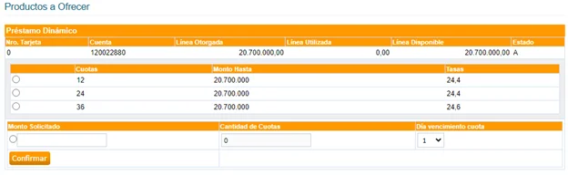
- Seleccionar Cuota, Monto Solicitado ≤ pre aprobado
- Fecha de vencimiento: entre 20 y 48 días
- Confirmar → se genera ID de referencia y n° de transacción
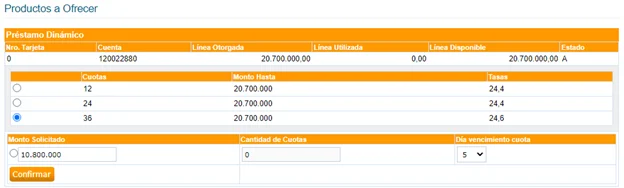
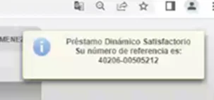
Si no se puede copiar el número, consultar en:
- Menú de opciones → Consulta de transacciones
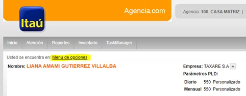
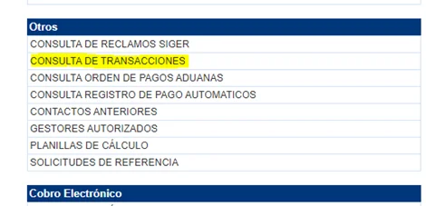
- Filtrar por fecha desde/hasta
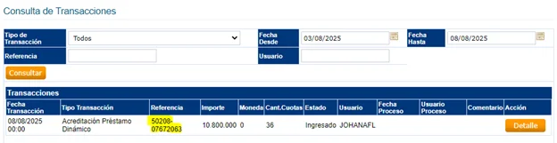
📋 Registro de Solicitud
Tipo de proceso: Solicitudes - Producto Préstamos
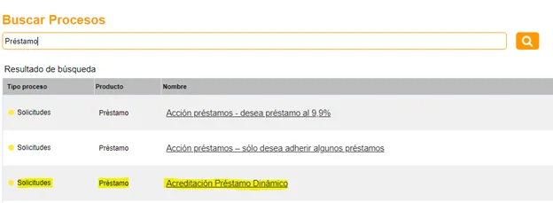
Formato: Cliente autoriza la acreditación del importe de (monto) en un plazo de (meses). Fecha de Primer Vto: ( ) – Celular: ( ) – Responde preguntas de seguridad – (Asesor) (Área) (Interno)
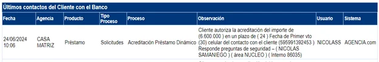
Completar el check 📝 de la solicitud del préstamo.
Validación por Mesa de Control
- Depositar el check en carpeta compartida
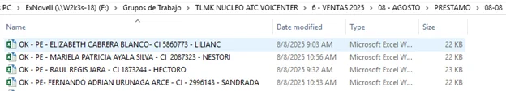
- Mesa escucha la llamada y valida datos
- Si no cumple, rechaza vía mail
- Si cumple, compila en planilla y remite al supervisor
- Pedidos de prioridad se validan y se remiten por correo
🔓 Activación de Cuenta
- Cuenta inmovilizada se activa en 24 hs (días hábiles)
- Para uso inmediato, solicitar activación por mail
- Verificar agencia en AS400 → Opción O04 → tecla 3 → ingresar cuenta
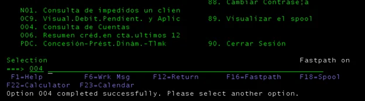
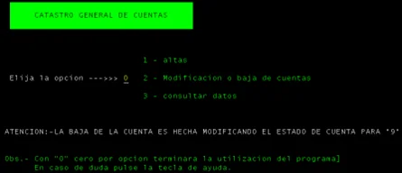
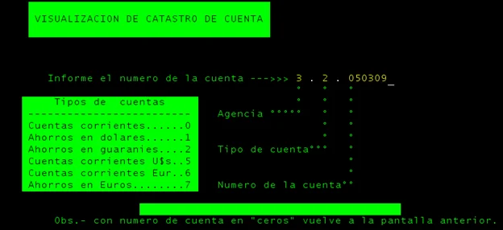
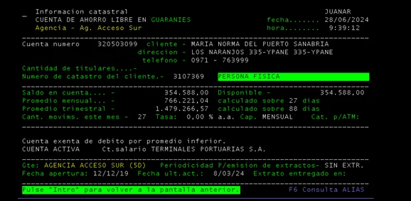
- 📧 Muestra de correo para solicitud de activación – Antes de remitirlo, confirmar previamente con Mesa de Control.
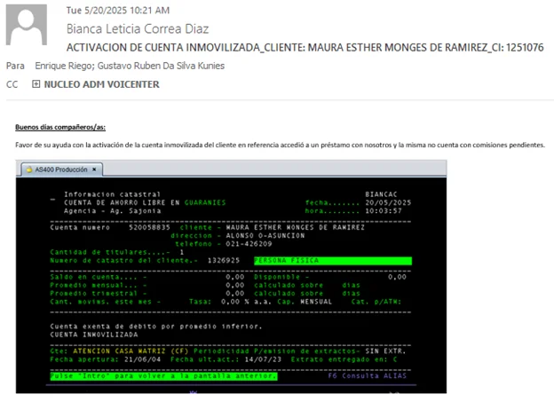
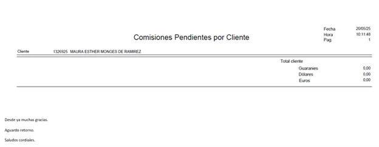
🛠️ Proceso de Toolbox – Todos los correos de aceptación deben incluir en copia al supervisor del área y al supervisor designado por el Banco.
- Correo catastrado ≥ 6 meses → válido
- Correo reciente → derivar a proceso con firma
- Documentos en carpeta “FORMULARIO PARA PRÉSTAMOS CON ENVÍO”
- Descarga de pagaré: Ir al link
Se desplegará la siguiente pantalla, ingresar con user y pass del Amazon
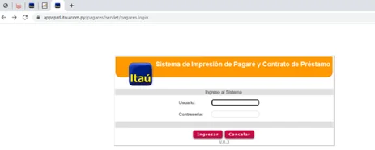
Opción: PT Temporal Pagaré
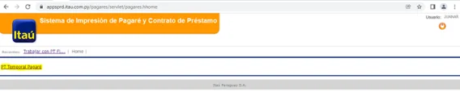
Insertar el númer de cliente y clic en buscar. Seleccionar el pagaré que corresponda.
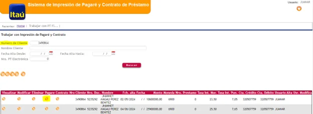
✅ Legitimación y Desembolso
- Área de legitimación aprueba → desembolso
- Documentos originales → Gestión Documental en ≤ 48 hs
- Si cuenta está inmovilizada, activar antes de acreditar
Registro de Préstamo Dinámico
Paso 1 – Registro inicial en Agencias.com
Los asesores deben registrar la operación en Agencias.com, seleccionando:
- Tipo de proceso: Registro
- Producto: Préstamos
- Nombre: Promotor de Préstamo
En este registro deben detallarse los siguientes datos:
- Monto solicitado
- Plazo del préstamo
- N° de cuenta
- Fecha de vencimiento
- N° de interno donde se confirmó con el cliente
- N° de teléfono del cliente utilizado en la llamada
Cliente autoriza la acreditación del importe de (monto) en un plazo de (meses).
Fecha del primer vencimiento: ( )
Celular del cliente: ( )
Responde preguntas de seguridad – (Asesor) (Área) (Interno)
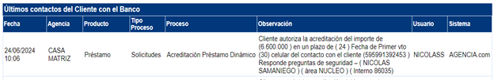
Paso 2 – Registro del número de operación
Una vez obtenido el número de operación, se debe volver a registrar en Promotor de Préstamos con el siguiente formato:
Usuario – N° de Operación
De esta forma, la información quedará disponible en el reporte de producción diaria (INFOPROD).
Paso 3 – Verificación del número de operación
El número de operación se puede verificar en Productos Vigentes dentro de Agencias.com:
- Si el préstamo es dinámico, el número aparece el mismo día.
- Si el préstamo es electrónico, el número aparece dentro de las 24 hs hábiles posteriores a la acreditación.
Ejemplos
Ejemplo – N° de operación
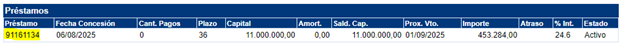
Ejemplo – Registro en sistema
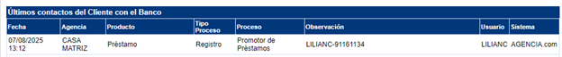
Proceso de Carga de Préstamo Dinámico
Tener en cuenta: el préstamo se vuelve dinámico en los siguientes casos:
- Mejora de tasa
- Suma de línea rotativa de tarjeta de crédito
- CCT
Flujo de carga en Catastro
Paso 1: Ingresar al flujo de carga en Catastro.
Haz clic en Siguiente para avanzar.
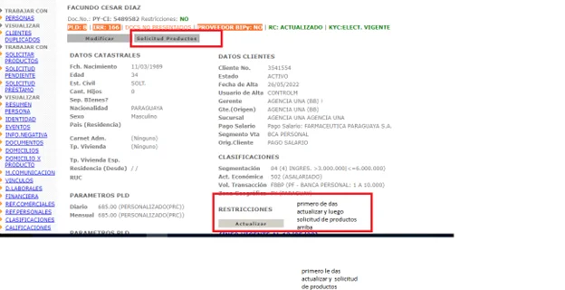
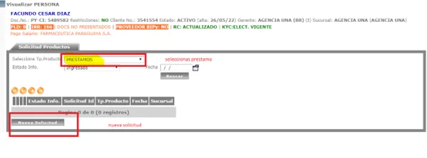
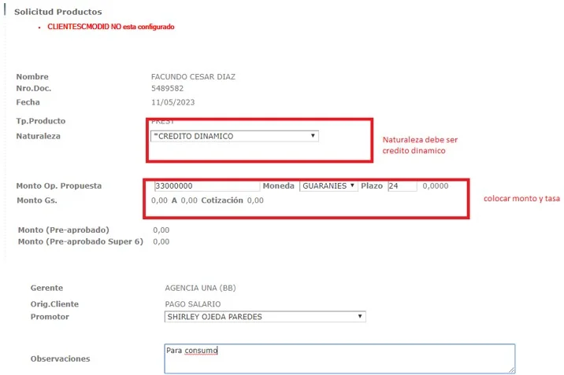
Paso 2: En la sección de selección de producto:
- Marcar PGS Itaú si el cliente cobra en el banco.
- Si no es PGS, marcar Pre-aprobado.
- Si es sin CCT y solicita que se marque para avanzar el flujo, seleccionar la opción Certificado de no ser contribuyente.
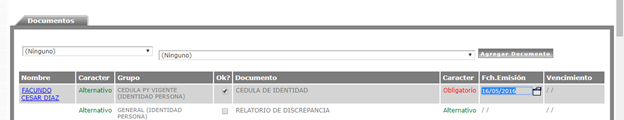
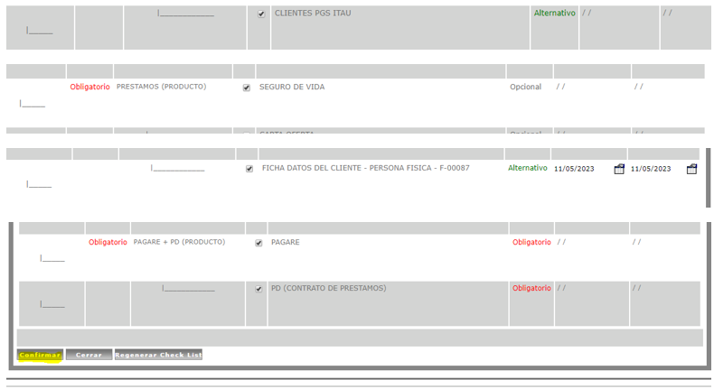
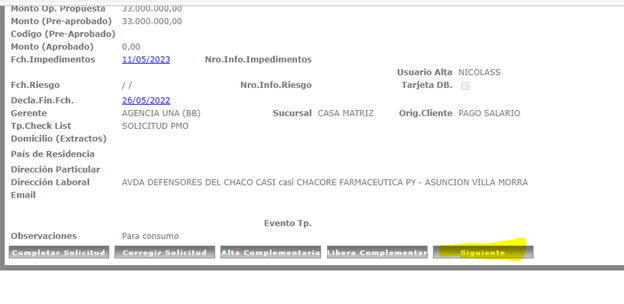
Paso 3: Selección de tipo de préstamo:
- SP Préstamo Personal: si es sin papel (toolbox).
- Crédito Dinámico: si es con firma (pre aprobado sin Capstone o con CCT).
- Préstamo Personal Pago de Salario: si es PGS por Capstone.
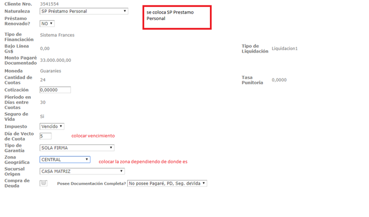
En Zona geográfica colocar:
- Si es con firma: la localidad (departamento) donde el cliente firmará.
- Si es sin firma (toolbox): la localidad donde vive el cliente (según catastro).
Paso 4: En
Comisión por desembolso, ingresar el valor que aparece en la
calculadora dinámica, sección
Formación de Carpeta.
⚠️ Ingresar sin puntos ni comas.
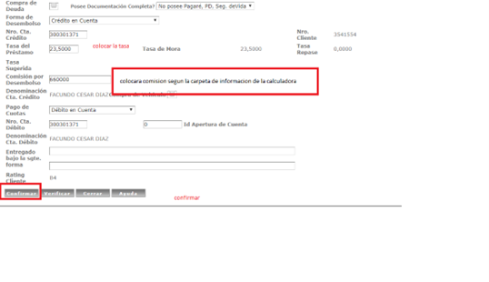
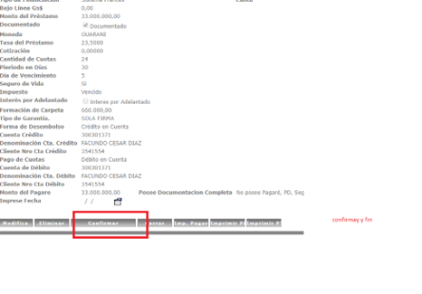
Paso 5: En caso de ser préstamo
sin papel (toolbox):
- Se envía la solicitud al cliente.
- Una vez que el cliente responde, se sube en Axentria el OK del cliente.
- Si hay mejora de tasa, también se sube el OK de Priscila.
- Luego ingresar en Catastro → Solicitud de Préstamo.
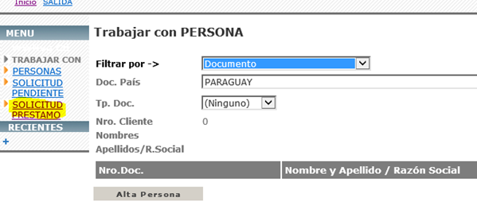
Paso 6: En la opción
Solicitud de préstamo:
- Ingresar la CI del cliente.
- Seleccionar Reparar solicitud.
- El trámite pasa a Legitimación para el proceso de aprobación y desembolso.
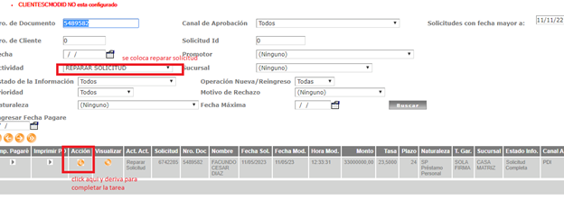
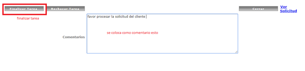
📈 Mejora de Tasa
- Monto mínimo: 10 millones
- Solo préstamos dinámicos – CCT
- Faja cross: B, B2, Ba2, B4, GH1
- Mejora posible: 2 o 3 puntos
Ejemplo mejora 2 puntos:
Verificar en carpeta “TLMK ATC NUCLEO VOI” y adjuntar captura del correo catastrado (si es sin papel).
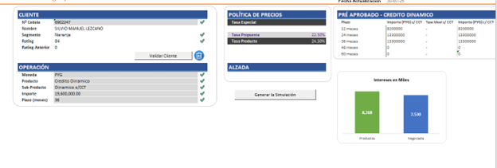
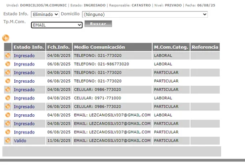
Ejemplo mejora 3 puntos:
Adjuntar capturas de Agencias, productos vigentes, monto aprobado y datos de ingresos desde AS400.
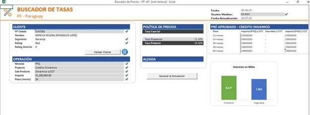
Proceso de Carga – Cliente No Carterizado
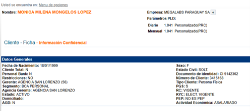
En este caso, a diferencia del flujo estándar, se deben incluir capturas adicionales como parte de la solicitud.
Detalles a agregar
- Captura de Agencias: Productos vigentes del cliente.
- Captura de AS400: comprobando que el cliente dispone de un monto aprobado hasta Gs. 46.200.000.
- Datos de ingresos de AS400: ejemplo: Gs. 3.712.000.
Todas las capturas se deben agregar en un formato adjunto en correo, dirigido a Controler,
para el posterior envío al Gerente Regional y su aprobación final.
Ejemplo de adjuntos en correo
- 📎 Captura de Agencias – Productos vigentes
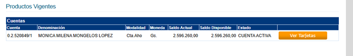
- 📎 Captura de AS400 – Monto aprobado
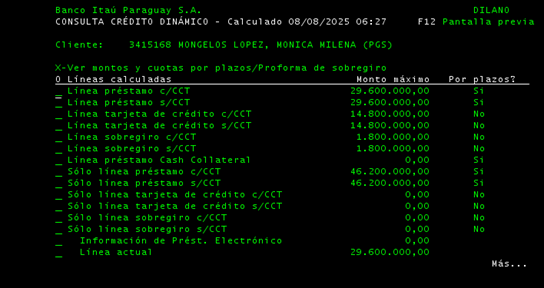
- 📎 Captura de AS400 – Datos de ingresos
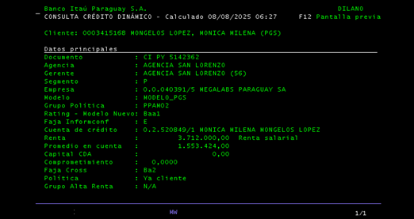
¡Informaciones Importantes de Préstamos!
Exclusiones en Agencias.com
¡A modo de tener en cuenta!